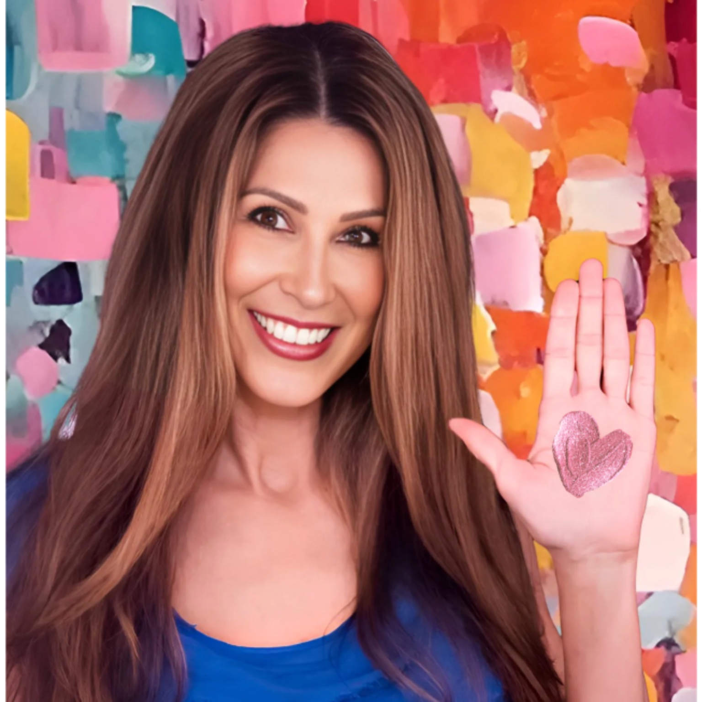

Tiffany Golden, CSA
A balanced brain of boardroom brilliance, undeniable insight, and a compass of compassion and consciousness, Tiffany Golden is a Founder on a mission to end silent suffering for two of the most precious populations at defining chapters of life:

Both struggling in silence. Unsteady. Untethered. Performing wellness as armor while unraveling beneath it. Inside systems designed to serve what presents, not decode what’s actually happening in the depths below. Not neglectful. Unaware.
A trailblazer across sports, entertainment, and consumer brands, recognized by Rolling Stone, Billboard, SPIN, The Hollywood Reporter, and the Los Angeles Times, Tiffany was shaping what’s now commonplace before it had buy-in or believers.
She co-architected the digital frontier of online concert ticketing when Ticketmaster needed to be convinced, and a visionary to prove it. The proof? Three words: Taylor Swift. Eras Tour. Decades later.
Golden co-championed digital movie ticketing on Yahoo! to movie studios when the idea felt outlandish.
Tiffany has always been fluent in what hasn’t happened yet, detecting the signal before anyone else had the receiver.

In particular, Tiffany instinctively understands people. She can redesign systems around the individual rather than forcing people to adapt to the system. Her uncanny ability to translate insight into practical action is remarkable. Everything she brings to the table has tangible purpose even with intangible assets. That is why her Care Intelligence System is so powerful and why it works not only for families but also for care communities and universities seeking to provide exceptional outcomes.
800+ days inside the full spectrum of the eldercare-aging care system alongside her father, the unexpected out-of-home move, VA, assisted living, skilled nursing, inpatient rehab, hospice to passing, while supporting her mother aging in place, and experiencing university gaps while her daughter assimilated into college.
What she experienced wasn’t a lack of care, effort, or intention. It was something far more consequential:
Tiffany witnessed firsthand the same dynamics and blindspots playing out on college campuses, regardless of large public university or small private university settings. Not a matter of resources, but systems not designed to see, reveal, and protect.
She didn’t just detect the patterns. She became the only person equipped to decode and prevent the catastrophic gaps.
Tiffany doesn’t operate off surface signals. She sees the misalignments. The micro-shifts. The patterns hiding in plain sight that nobody else knows to look for. The goldmines being overlooked… and the landmines already in motion.
A frequency of awareness that no system, no intake form, no algorithm, and no AI was ever built to see.
The awareness that lives beneath data, beneath dashboards, beneath the surface every system was designed to serve. The signal no algorithm detects. The dimension every system overlooks. The one everything actually depends on.
This is the work she was always moving toward, and didn’t know it until she arrived.
Today, through Golden Strategy, Tiffany partners with C-suite leaders, care organizations, and university presidents and deans who prioritize their people over their process and recognize hidden doesn’t mean harmless.
She identifies the unseen forces driving disengagement, burnout, instability, and loss, and recalibrates systems around the human being inside them.
She pinpoints it. She transforms it. No costly, intricate system redesigns: instead an immediate human intelligence layer.
Her proprietary intelligence architectures—Actionable Awareness™, Care Intelligence™, Golden Lens™ GPS, and Student Elevation Architecture™—expose and resolve what every system hasn’t been built to detect nor protect.
With 30 years forged at the intersection of strategy, human behavior, leadership, and lived experience, she has created proprietary intelligence architectures that don’t exist anywhere else in the world.
Her 2026 prescriptive The Five Box Method Care Intelligence System For Moving Aging Parents, on-demand masterclasses, keynotes, and team training will expand this work.
Imagine transformative app technology that reflects human depth. The ones that see deepest. Not AI that mimics awareness. Intelligent awareness architected around the human being inside it.